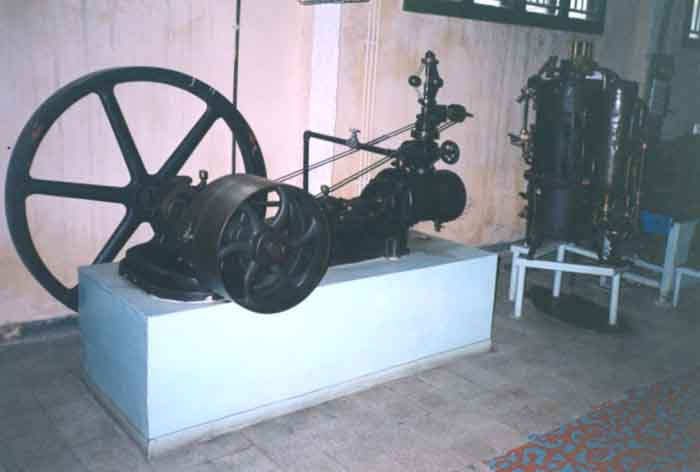
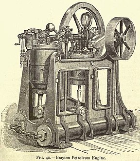
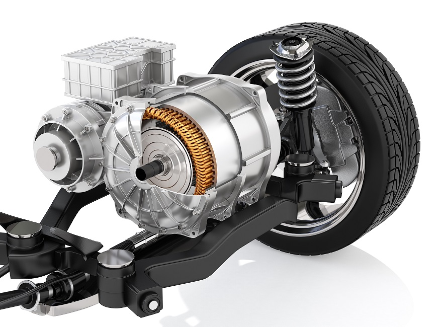
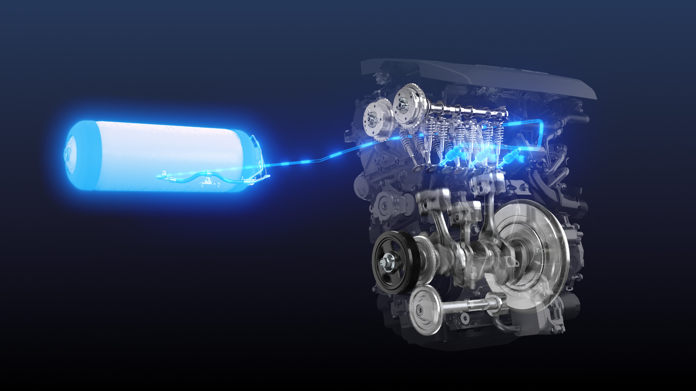

Motorul cu abur a fost una dintre primele forme de motorizare utilizate în automobile. Aceste motoare funcționau pe principiul transformării energiei termice în energie mecanică, folosind aburul ca agent de lucru. Primele automobile cu motoare cu abur au apărut în secolul al XIX-lea și au fost esențiale pentru dezvoltarea industriei auto. Cu toate acestea, motoarele cu abur au fost în cele din urmă înlocuite de motoarele cu combustie internă, din cauza eficienței lor reduse și a altor limitări tehnologice.
Motorul cu combustie internă a fost o inovație majoră în industria auto și a devenit principala formă de propulsie utilizată în automobilele moderne. Aceste motoare funcționează prin aprinderea amestecului de combustibil și aer într-o cameră de ardere internă, generând astfel forța necesară pentru deplasarea vehiculului. Motorul cu combustie internă a fost îmbunătățit și rafinat de-a lungul timpului, ducând la creșterea eficienței și performanței mașinilor.
Motorizarea electrică a reprezentat o revoluție în industria auto, oferind o alternativă ecologică la motoarele cu combustie internă. Mașinile electrice sunt alimentate de baterii electrice și nu produc emisii de gaze cu efect de seră sau poluanți în timpul funcționării. Cu tehnologiile moderne de baterii și infrastructura de încărcare în continuă dezvoltare, mașinile electrice devin din ce în ce mai populare și mai accesibile.
În ultimele decenii, au apărut și alte tehnologii de propulsie alternativă în industria auto, în încercarea de a reduce dependența de combustibilii fosili și de a limita impactul asupra mediului înconjurător. Aceste tehnologii includ vehicule hibride, care combină un motor cu combustie internă cu unul electric, mașinile cu hidrogen, care folosesc hidrogenul ca combustibil pentru a produce energie electrică, și vehiculele care funcționează pe bază de gaz natural comprimat (CNG). Fiecare dintre aceste tehnologii prezintă avantaje și provocări unice și contribuie la diversificarea și inovarea în industria auto.
